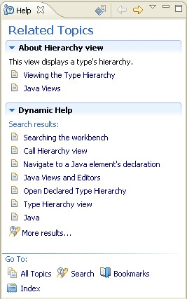
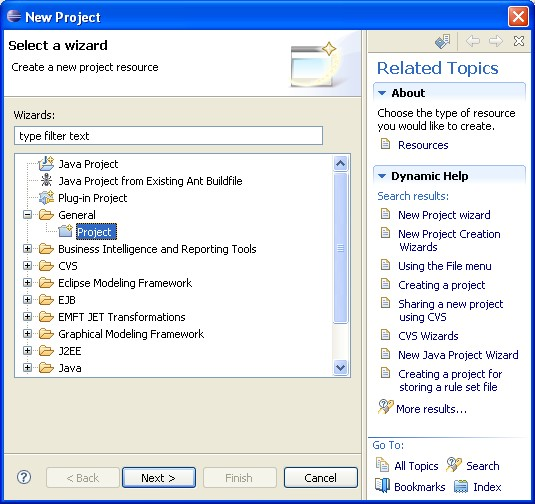
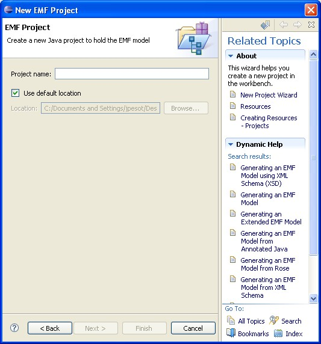
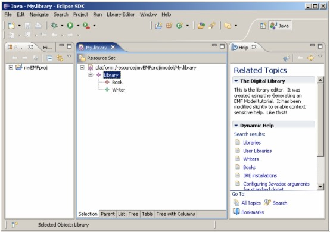
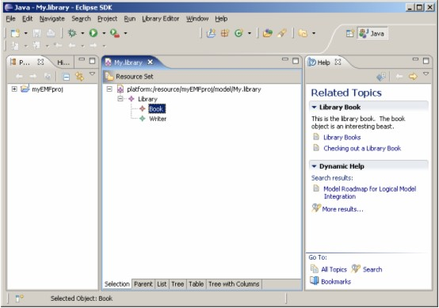
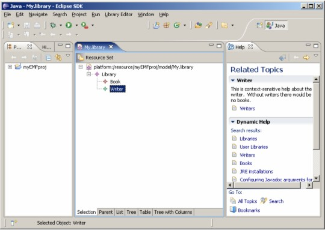

Introduction
For years, software developers have looked for better ways to provide users with more timely information to help them be successful. Why? If users have to regularly engage and hunt through a large Help system, they'll become frustrated. Opening the Help system is an overt action that the user must take to get information. Because it is an overt action, it interrupts the user's task.
From a usability perspective, it would be much more efficient for the user if context-relevant information were dynamically presented, immediately available, and easily visible while the user continues to work. If information could be presented in this fashion, users would be able to engage targeted information without significant disruption to their tasks. The challenge has been that mechanisms for presenting information in this fashion have been lacking. Fortunately, the latest versions of Eclipse include new (and evolving) mechanisms for providing dynamic context-sensitive help.
To help you understand and leverage these mechanisms, this article will begin by providing a few simple examples of the basic context-sensitive help found in Eclipse, discussing them from the user's perspective. Next, we'll look at a simple example of how you can take advantage of Eclipse's help framework directly, with no additional programming required. Finally, we'll use a small sample application (based on the sample EMF Library Editor) to describe how you can extend the basic capabilities provided by Eclipse, thereby significantly increasing the extent to which your can provide dynamic context-sensitive information. For this example, we implement the following methods from the IContextProvider class:
- getContextChangeMask - This method returns flags indicating which types of events should trigger a context help update.
- getContext - This method returns a help context for the given target. The number of times this method will be called depends on the context change mask. Static context providers will be called each time the owner of the target is activated. If change triggers are used, the method will be called each time the trigger occurs.
- getSearchExpression - This method returns a search expression that finds more information about the current target. It can be used to return results for the Dynamic Help section of the Help view. We will discuss this method towards the end of the article.
The User's Experience of Context-Sensitive Help
The basic intent of context sensitive help is to be able to present the user with a small amount of relevant information based on the objects that they are currently engaging within the product user interface (UI). Eclipse's basic context-sensitive help capabilities allow you to create information about wizard pages, views, and editors. By doing so, as the user moves from view to view or editor to editor, the information presented in the Help view changes.
To see this for yourself, follow these steps:
- Open your Eclipse workbench.
- Switch to the Java perspective.
- Click Help > Dynamic Help (the Help view opens).
- Select the Hierarchy view.
If the dynamic help view is your default context-sensitive help mechanism (Windows > Preferences > Help), the Help view should now look something like Figure 1.
If you select various views and editors in your workbench, you will notice that the two sections of the Help view change. The top section, About Hierarchy view, describes the Hierarchy view and provides a few targeted links where additional information is available. The next section, called Dynamic Help, provides a longer list of links. This set of links is the result of an automatic search query that is built and run by the Eclipse dynamic assistance framework. The basic query combines the view or editor name, and the current perspective, performs a search of the Help system, and returns the top items from the results list.
Figure 1. The Help View

In addition to providing context-sensitive help for views and editors, it can also be very useful for wizards. To see this for yourself, follow these steps:
- Select File > New > Project. The New Project wizard appears.
- Select the question mark icon in the lower left corner of the wizard. A Help view appears, attached to the wizard.
Figure 2 shows the New Project wizard with context-sensitive help opened.
Figure 2. The New Project Wizard

To see how the help content changes, select a project type from the list and then select Next. The help on the second page of the wizard will now include elements related to the type of project selected.
For example, Figure 3 shows the help found on page two of this wizard, assuming you selected an Eclipse Modeling Framework (EMF) project. The Dynamic Help section changes to show items which relate to EMF based projects.
Figure 3. New EMF Project

The Help view can be particularly powerful for new users, who often become confused by the wide array of views, perspectives, and wizards that are available.
The next section of this article will describe how you can take advantage of this basic capability.
Creating Context-Sensitive Help for Wizards, Views and Editors
Since Eclipse handles the infrastructure for us, we only have to define three things: a unique identifier (known as a context ID), the place we want a particular context-sensitive help topic to be available, and the contents of the help topic. The first two are generally done by a code developer, and the third part is generally done by a user assistance developer or documentation writer.
To attach a context-sensitive help topic to a wizard page, for example, we first need to define a unique context ID. A context ID is a string that serves as an identifier connecting the UI and a particular help topic; it can contain letters, numbers, and the underscore character. To allow the help topic to exist in a separate plugin (an arrangement that has many advantages), we need to make the context ID "fully qualified," which means that we want to prepend the code plugin's plugin ID.
So, for our example wizard page, the fully qualified context ID is "org.eclipse.ui.ide.new_project_wizard_page_context". This value is set in org.eclipse.ui.internal.ide/IIDEHelpContextIds.java (where the string IDEWorkbenchPlugin.IDE_WORKBENCH is set to equal "org.eclipse.ui.ide", the plugin ID for this code plugin).
public interface IIDEHelpContextIds {
public static final String PREFIX = IDEWorkbenchPlugin.IDE_WORKBENCH + ".";
public static final String NEW_PROJECT_WIZARD_PAGE = PREFIX
+ "new_project_wizard_page_context";
The fully qualified context ID is now defined and contained in a string named "IIDEHelpContextIds.NEW_PROJECT_WIZARD_PAGE".
The second step is to attach the context ID to the wizard page. In the WizardNewProjectCreationPage.java file that defines the wizard page, this is done with the setHelp() method:
public class WizardNewProjectCreationPage extends WizardPage {
...
public void createControl(Composite parent) {
Composite composite = new Composite(parent, SWT.NULL);
...
PlatformUI.getWorkbench().getHelpSystem().setHelp(composite,
IIDEHelpContextIds.NEW_PROJECT_WIZARD_PAGE);
If you're wondering why the setHelp method doesn't just refer to fully qualified context ID itself, it is possible to
do that, but if the code ever were to move to a different plugin or the plugin were renamed, it would be more difficult to find and change all the
context ID declarations.
Now we just need to create the context-sensitive help topic. This final step involves two XML files: a plugin.xml file and a contexts file. Let's look at the contexts file, contexts_Workbench.xml, first:
<?xml version="1.0" encoding="utf-8"?>
<contexts>
...
<context id="new_project_wizard_page_context">
<description>This wizard helps you create a new project in the
workbench.</description>
<topic href="reference/ref-37.htm" label="New Project Wizard"/>
<topic href="concepts/concepts-12.htm" label="Resources"/>
<topic href="tasks/tasks-42.htm" label="Creating Resources - Projects"/>
</context>
...
</contexts>This should look familiar. A context element defines a single context-sensitive help topic. The context ID is the one defined in the developer's code above (only it is not fully qualified), and the description and topic elements contain the text and hyperlinks we saw in Figure 3. There's nothing else in a contexts file but these <context> elements, but you can put as many of them in one as you want.
The last piece of the puzzle is identifying our contexts file in the plugin.xml file (the one in the same plugin as our contexts file). That code looks like this:
<extension point="org.eclipse.help.contexts">
<contexts file="contexts_Workbench.xml" plugin="org.eclipse.ui.ide"/>
</extension>Since the contexts file and plugin.xml for this wizard exist in a separate plugin (org.eclipse.platform.doc.user) than the wizard code (org.eclipse.ui.ide), the code plugin's plugin ID must be specified in the plugin attribute of the <contexts> element.
That's it in a nutshell. There are additional considerations, like how to organize dozens or even hundreds of these, or provide National Language (translated) versions of them, but if you architect your context-sensitive help in this way, you're already set up to handle those problems easily.
What about attaching context-sensitive help to other things, like views and editors? According to the Eclipse user assistance
on the subject, context IDs can be associated with a Control, IAction, Menu, or MenuItem. (Other UI
elements cannot be associated with a context ID or cannot receive focus anyway, so assigning context IDs to them would be
pointless.) Since views, editors, and wizards are simply different types of controls, declaring context IDs on views and editors
is virtually identical to the method shown above.
The primary limitation of the Eclipse context-sensitive help mechanism is that only certain user actions will cause a new context-sensitive help topic to be automatically displayed in an already-open Help view. For example, changing the focus to a different view in your workspace, switching to a different page in a wizard, or clicking a tab in a descriptor editor will result in fresh information, but other actions, like moving from field to field in a wizard page or descriptor editor, or clicking on items in a graphical editor, do not.
This limitation is a legacy of the prior context-sensitive help mechanism, the "infopop," which was a temporary pop-up box that displayed the contents of only one context-sensitive help topic and then went away. To launch an infopop, the user pressed the F1 key; while separate fields in a wizard could have separate helps, the user had to press F1 in each field to access them. This capability still exists in the Help view – that is, the user can refresh the context-sensitive help topic by pressing F1 from within a different form field, but when the Help view is already open and supposedly dynamic, users shouldn't be expected to have to do that, nor would they likely think to.
As you have probably deduced, this means that certain UIs could be stuck displaying the same context-sensitive help topic while the user goes about a variety of tasks inside a view or an editor. How many times will a user read "An X editor is used to edit X files" before deciding that the Help view is neither dynamic nor helpful? The other extreme--overloading a single help topic for a view or editor with explanations of everything the user might want to know--is not the answer, either. In that case, the user would recoil from information overload and be annoyed at having to hunt through the text for the desired information. The better solution is to automatically provide the right information, in the right amount, at the right time.
Adding Truly Dynamic Context-Sensitive Help to a Sample Application
To achieve our goal of creating truly dynamic context-sensitive help, where the Help view updates with every context change, we need to create our own context provider. The implementation of a context provider is straightforward and provides two major benefits:
- It addresses the need to have truly context-sensitive help. In effect, the Help view will have an opportunity to update with every selection change in the workbench.
- You will gain the ability to provide context-sensitive help to a variety of object types beyond those provided by the help system.
The IWorkbenchHelpSystem.setHelp method (which is limited to the types Control, IAction,
Menu and MenuItem) fails to address many of the common editor widget types like TreeItem or GEF objects. The more robust
dynamic context-sensitive help that we describe in this section of the article is built upon the default help framework infrastructure using
the context ID mapping pattern described in previous section.
Beyond the setup of the context ID with documentation, two steps are required to create this dynamic help infrastructure. First, an
implementation of IContextProvider must be created for providing an IContext object
based on the user selection. Secondly, the WorkbenchPart (Editor or View) that contains the selection being
activated needs to adapt the new context provider based upon the key IContextProvider class.
Included with this article is an Eclipse workspace that contains a custom application built on the EMF library example. Click here to download the ContextSensitiveHelp.zip workspace. Unzip the ContextSensitiveHelp workspace, and then start Eclipse 3.2, or any product based on Eclipse 3.2, such as Rational Application Developer or Rational Software Architect.
The example application provided here extends the original EMF library example (which provides a basic editor for managing library information such as books and writers) so that it now includes dynamic context-sensitive help set up on the library and book objects (steps for adding dynamic context sensitive help for the Writer object are provided later in this article).
To run the sample application:
- Open the ContextsensitiveHelp workspace using any Eclipse version 3.2 environment with EMF.
- Open either the Java or Plug-in Development perspectives.
- Select the Library project and click Run > Run As > Eclipse Application. An Eclipse run-time envirnment will start.
- In the Eclipse run-time environment, click New > Project. Expand Eclipse Modeling Framework and select Empty EMF Project.
- Give the project a name and click Finish.
- In the Package Explorer, expand the project, right-click on the model folder, and click New > Other.
- Expand Example EMF Model Creation Wizards and select Library Model.
- Click Next twice.
- On the Library Model page, select Library from the Model Object list and click Finish. The Library Editor opens with your new model (see Figure 4).
- Press F1 and ensure the Help view is open to the Related Topics page.
- Right-click on the Library object in the editor and click New Child > Book.
- Give the new book propereties.
Figure 4. The Library Editor

Notice how clicking on the Book object in the editor provides a different context-sensitive help topic in the Help view than the basic help about the editor (see Figure 5). If you create a Writer object, note that it does not update the Help view. This object is not hooked up to a context-sensitive help topic yet; we'll do that manually later in the article.
Figure 5. Selecting a Book in the Library Editor

Back in the ContextSensitiveHelp workspace, examine the sample code and note the following changes we made to the Library Editor to implement dynamic context-sensitive help.
We added a basic plugin called "library.csh" with a context.xml file that contains a couple of context-sensitive
help topics with IDs like "defaultLibraryId," and we added an extension to org.eclipse.help.contexts to define the contexts.xml, with the
plugin set to "library".
In the library.editor project, we added a plugin dependency to org.eclipse.help.
In the library.editor project, we created a new class named LibraryHelpContextProvider that
implements IContextProvider in the package com.example.library.help.
We implemented the method getContextChangeMask:
public int getContextChangeMask() {
return IContextProvider.SELECTION;
}We implemented getContext to return the IContext based upon the EMF selected
object:
public IContext getContext(Object target) {
ISelection selection = editor.getSelection();
if (selection instanceof TreeSelection) {
Object element = ((TreeSelection)selection).getFirstElement();
if (element instanceof Book) {
return HelpSystem.getContext("library.libraryBookId");
}
}
return HelpSystem.getContext("library.defaultLibraryId");
}We implemented getSearchExpression to return a string that can be used for dynamic help look-up:
public String getSearchExpression(Object target) {
return null;
}We added a constructor that stores a LibraryEditor as a property:
public LibraryHelpContextProvider(LibraryEditor editor) {
this.editor = editor;
}We updated the editor to return the declared context provider (the getAdapter method in LibraryEditor in
the com.example.library.presentation package):
else if (key.equals(IContextProvider.class)) {
if (contextprovider == null)
contextprovider = new LibraryHelpContextProvider(this);
return contextprovider;
}We added import statements, as necessary, to resolve errors.
Finally, we updated the Editor to implement IAdaptable to return our custom provider.
Adding Dynamic Context Sensitive Help to the Writer object
As mentioned earlier, we've left room to add dynamic context-sensitive help to the Writer object. To do that, follow these steps:
- Add a new context-sensitive help topic to contexts.xml:
<context id="libraryWriterId" title="Writer"> <description>This is context-sensitive help about the writer. Without writers there would be no books.</description> <topic href="../library.doc/topics/writers.html" label="Writers"/> </context>
- Add a new
getContextcall to thegetContext methodin LibraryHelpContextProvider:public IContext getContext(Object target) { ISelection selection = editor.getSelection(); if (selection instanceof TreeSelection) { Object element =((TreeSelection)selection).getFirstElement(); if (element instanceof Book) { return HelpSystem.getContext("library.libraryBookId"); } if (element instanceof Writer) { return HelpSystem.getContext("library.libraryWriterId"); } } }
- Add an import statement for
com.ibm.library.Writerat the top of the file.
Now, run the sample again and select the Writer object (see Figure 6). The Dynamic Help view should respond to the selection of the Writer object.
Figure 6. Selecting a Writer in the Library Editor

Dynamic Search Results
Finally, as a bonus, let's direct our attention to the dynamic search results in the Dynamic Help portion of the Help view. Normally, the search parameters are simply the name of the view or editor and the name of the perspective, which are passed dynamically (and under the covers) to the Help system's search engine. To see for yourself, scroll the Help view to the bottom and click "More results..." The search parameters used appear in the Search expression text box.
While it's possible to improve search results by trying to modify help topics to take advantage of the search terms
that are already being used, a better solution is to pass more specific search terms. The new ContextProvider
class provides a method called getSearchExpression which allows us to do this. Since
we've gone to the trouble of implementing our own custom context provider, we can use this method.
In the following method in LibraryHelpContextProvider, the search strings that are passed to the search engine are
determined by the object selected. If the book element is selected, the string "library" and "book" are the search parameters. Otherwise, the
default search parameter is "library".
//Here is where dynamic search string values are added
public String getSearchExpression(Object target) {
ISelection selection = editor.getSelection();
if (selection instanceof TreeSelection) {
Object element = ((TreeSelection)selection).getFirstElement();
if (element instanceof Book) {
// return a search string
return "\"library\" + \"book\"";
}
}
return "library";
}Note that although the search terms are hard-coded into the Java file here, these search expressions can be string-separated for translation purposes, in the same way that any string is externalized.
As you run the Eclipse application with these changes, remember to click "More results..." at the bottom of the Dynamic Help view so that you can see what search strings are being used.
Summary
Development environments evolve at a very rapid pace. As soon as a user learns one tool, a new tool arrives and the learing process starts again. As a tool developer, you can help your users by taking advantage of Eclipse's context-sensitive help and Dynamic Assistance framework. Doing so helps ensure that your users can quickly find information about how to be most effective, which will increase their satisfaction with your tools.